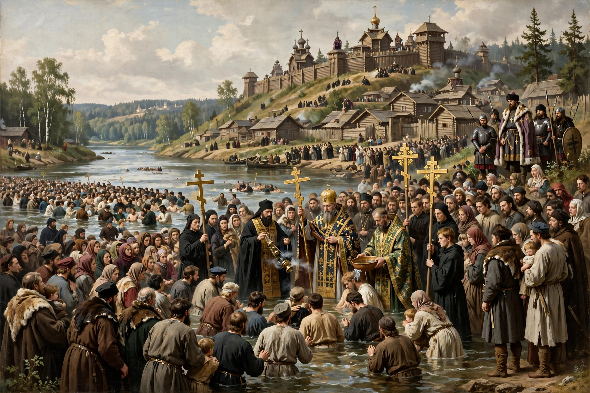

| Christianization of Kievan Rus' | |
|---|---|
| Date | c. 988 |
| Location | Kievan Rus' |
| Key figure | Vladimir the Great |
| Result | Adoption of Eastern Orthodox Christianity as the state religion |
The Christianization of Kievan Rus' refers to the mass baptism of the Rus' people under Prince Vladimir of Kiev, conventionally dated to 988, which established Eastern Orthodox Christianity as the state religion of Kievan Rus'. It is a foundational event in the religious and cultural history of Ukraine, Russia, and Belarus.

Christianity had reached the Rus' lands earlier: a Rus' bishopric is mentioned in the ninth century, and Vladimir's grandmother Olga was baptised in Constantinople around 955, though her son Sviatoslav remained pagan. According to the Primary Chronicle, Vladimir sent envoys to study the religions of neighbouring peoples — Islam, Judaism, Latin Christianity, and Byzantine Christianity — and was won over by the splendour of the liturgy in Hagia Sophia.
The chronicle recounts that Vladimir seized the Byzantine city of Chersonesus in Crimea and demanded marriage to Anna, sister of emperors Basil II and Constantine VIII, accepting baptism himself — taking the Christian name Basil. Returning to Kiev, he ordered the destruction of pagan idols, including the statue of Perun, and commanded the population to be baptised en masse in the Dnieper River. Churches were built, clergy brought from Byzantium and Bulgaria, and schools established.
Christianization bound Kievan Rus' to the Byzantine cultural world, brought Church Slavonic literacy, canon law, and new art and architecture, and strengthened princely authority. Pagan beliefs survived in folk practice for centuries in a pattern historians call "dual faith" (dvoeverie), but Orthodoxy became central to East Slavic identity.
Vladimir the Great · Kievan Rus' · Olga of Kiev · Primary Chronicle